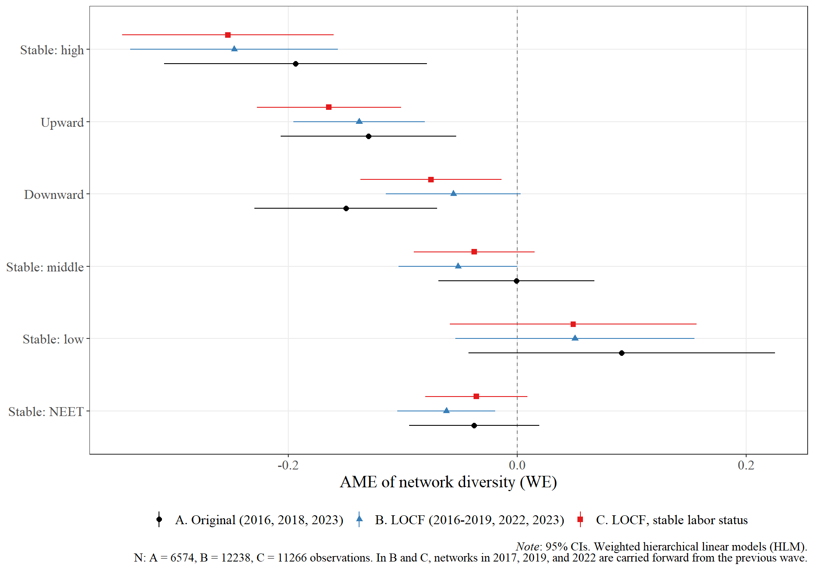

set1 <- RColorBrewer::brewer.pal(n = 8, name = "Set1")
options(ggplot2.discrete.fill = set1)
options(ggplot2.discrete.colour = set1)
ggplot2::theme_set(ggplot2::theme_bw())
ggplot2::theme_update(text = ggplot2::element_text(size = 15, family = "serif"))
options(scipen = 999)
if (!require("pacman")) install.packages("pacman")
pacman::p_load(dplyr, tidyr, lme4, plm, fixest, ggplot2, ggtext, scales, texreg)Longer panel with last observation carried forward (robustness check, Study 2)
Setup
Purpose
ELSOC measures occupation and the position generator only in 2016, 2018, 2021, and 2023 (waves 1, 3, 5, 7). Market justice preferences are measured in every wave except 2021. The main analysis therefore uses three waves with complete information (2016, 2018, 2023).
This document extends the panel with the waves that measure market justice but not networks or occupation (2017, 2019, 2022; waves 2, 4, 6). In each of these waves, network and occupational variables are taken from the immediately preceding wave (last observation carried forward, LOCF).
| Wave with market justice | Networks and occupation taken from | Lag |
|---|---|---|
| 2016 (w1) | 2016 (w1) | 0 |
| 2017 (w2) | 2016 (w1) | 1 year |
| 2018 (w3) | 2018 (w3) | 0 |
| 2019 (w4) | 2018 (w3) | 1 year |
| 2022 (w6) | 2021 (w5) | 1 year |
| 2023 (w7) | 2023 (w7) | 0 |
Three samples are compared.
- A. Original. Waves 1, 3, and 7, as in the paper (6,574 observations, 2,872 individuals).
- B. LOCF. Waves 1, 2, 3, 4, 6, and 7. A carried row is used only if the respondent was interviewed in the immediately preceding wave.
- C. LOCF, stable labor status. Same as B, but carried rows are dropped when the respondent’s labor status (
m02, employed = codes 1 to 3) changed between the previous wave and the current wave. This is a rough guard against carrying forward an occupation or a network that has probably changed.
What LOCF assumes. Networks and occupation do not change in the year after they were measured. Within-person change in diversity can therefore only appear in the waves where networks are measured. Carried rows add information on the outcome but no new information on diversity, so standard errors in B and C are probably too small. The mobility trajectories (mobility_cat_adj_isco3) are person-level and are taken unchanged from the main analysis, so they are not affected by LOCF.
Step 1. Load the data
df1 is the panel saved in 00-main_analysis.Rmd before na.omit() (waves 1, 3, 5, 7). The even waves are taken from study2.RData, the same source used to build df1.
load(here::here("input/data/proc/df1_panel_for_mice.RData")) # df1
df1 <- as.data.frame(df1)
load(here::here("input/data/proc/study2.RData")) # elsoc_long
elsoc_long <- as.data.frame(elsoc_long)
table(df1$ola)
1 3 5 7
2927 2229 1739 1737 Step 2. Build the even-wave rows
Market justice is built as in 00-main_analysis.Rmd (mean of the three items). The variables that are measured in every wave (sex, age, labor status, weights) are taken from the even wave itself. Network diversity, occupation, and partner are taken from the previous wave. Partner is carried forward because it is not measured in 2017.
even <- elsoc_long %>%
filter(ola %in% c(2, 4, 6), muestra == 1, idencuesta != 3577497540) %>%
transmute(id = idencuesta, ola, muestra,
atricion = tipo_atricion,
just_educ, just_salud, just_pension,
market = rowMeans(cbind(just_educ, just_salud, just_pension), na.rm = TRUE),
age = m0_edad, sex = sexo_fx, m02,
weights1 = ponderador_long_total, ponderador02,
partner_own = partner) %>%
mutate(market = ifelse(is.nan(market), NA, market)) %>%
filter(age >= 15)
# Time-varying variables carried forward from the previous wave
vars_carry <- c("n_total", "isei_avg", "entropy_contacts", "know_total", "crossclass", "strong_tie",
"isei_c", "isco03_neet", "isco08_1lvl", "partner", "m02")
prev <- df1 %>%
filter(ola %in% c(1, 3, 5)) %>%
select(id, ola, all_of(vars_carry)) %>%
rename(m02_prev = m02) %>%
mutate(ola = ola + 1) # w1 -> w2, w3 -> w4, w5 -> w6
# Person-level variables (constant within individuals)
vars_person <- c("migrationw1", "parenteducw1", "isco_father",
"mobility_cat_adj_isco3", "mobility_cat_unadj", "mobility_cat_adj_isco3b",
"mobility_cat_adj_isco3c", "mobility_cat_adj_isco3d", "mobility_cat_adj_egp3", "moves")
person <- df1 %>% select(id, all_of(vars_person)) %>% distinct()
stopifnot(!anyDuplicated(person$id))
even <- even %>%
inner_join(prev, by = c("id", "ola")) %>% # keeps only respondents interviewed in the previous wave
left_join(person, by = "id") %>%
mutate(employed = as.numeric(m02 %in% 1:3),
employed_prev = as.numeric(m02_prev %in% 1:3),
lfs_change = as.numeric(employed != employed_prev),
locf = 1)
# Respondents in the even waves, and how many have a previous-wave interview
data.frame(
wave = c(2, 4, 6),
interviewed = as.numeric(table(factor(elsoc_long$ola[elsoc_long$ola %in% c(2, 4, 6) & elsoc_long$muestra == 1], levels = c(2, 4, 6)))),
with_previous_wave = as.numeric(table(factor(even$ola, levels = c(2, 4, 6)))))| wave | interviewed | with_previous_wave |
|---|---|---|
| 2 | 2473 | 2473 |
| 4 | 2153 | 1997 |
| 6 | 1728 | 1450 |
# Labor status change between the previous and the current wave
table(wave = even$ola, labor_status_change = even$lfs_change) labor_status_change
wave 0 1
2 2064 409
4 1654 343
6 1183 267Step 3. Stack the panel
odd <- df1 %>% mutate(locf = 0, lfs_change = 0)
panel_long <- bind_rows(odd, even %>% select(-partner_own, -m02_prev, -employed, -employed_prev)) %>%
arrange(id, ola) %>%
mutate(time = ola)
table(panel_long$ola, panel_long$locf)
0 1
1 2927 0
2 0 2473
3 2229 0
4 0 1997
5 1739 0
6 0 1450
7 1737 0Step 4. Analytical samples
The exclusion of armed forces, select(), and na.omit() follow the prep-analysis-data chunk of 00-main_analysis.Rmd. Armed forces are identified in the odd waves, as in the paper.
militares <- df1 %>% filter(isco08_1lvl == "0000") %>% pull(id) %>% unique()
vars_paper <- c("id", "time",
"market", "just_educ", "just_salud", "just_pension",
"n_total", "isei_avg", "entropy_contacts", "know_total", "crossclass", "strong_tie",
"sex", "age", "parenteducw1", "migrationw1", "isco_father", "partner",
"isei_c", "isco03_neet",
"mobility_cat_adj_isco3", "mobility_cat_unadj", "mobility_cat_adj_isco3b",
"mobility_cat_adj_isco3c", "mobility_cat_adj_isco3d", "mobility_cat_adj_egp3", "moves",
"ponderador02", "weights1", "atricion")
make_sample <- function(d) {
d %>% filter(!id %in% militares) %>%
select(all_of(vars_paper), locf, lfs_change) %>%
na.omit() %>%
as.data.frame()
}
samples <- list(
A = make_sample(panel_long %>% filter(ola %in% c(1, 3, 5, 7))),
B = make_sample(panel_long),
C = make_sample(panel_long %>% filter(!(locf == 1 & lfs_change == 1))))
# Sample A must reproduce the paper
stopifnot(nrow(samples$A) == 6574, n_distinct(samples$A$id) == 2872)
sapply(samples, function(d) c(observations = nrow(d), individuals = n_distinct(d$id),
carried_rows = sum(d$locf))) A B C
observations 6574 12238 11266
individuals 2872 2875 2875
carried_rows 0 5664 4692lapply(samples, function(d) table(d$time))$A
1 3 7
2744 2139 1691
$B
1 2 3 4 6 7
2744 2320 2139 1925 1419 1691
$C
1 2 3 4 6 7
2744 1938 2139 1598 1156 1691 Mobility trajectories are not recomputed
The mobility trajectories (mobility_cat_adj_isco3 and the alternatives B, C, D, and EGP) are person-level variables. They are built in 00-main_analysis.Rmd from the waves in which occupation is actually measured (2016, 2018, 2021, and 2023) and are joined here by id. Every respondent therefore keeps the same trajectory in samples A, B, and C. They are deliberately not recomputed with the carried rows, for two reasons.
- First and last positions would not change. A carried row copies the position of the previous wave, so it never adds a new position. The first position is still the one observed in 2016. The last position is also the same: if a respondent’s last row is a carried 2022 row, its value is the one observed in 2021.
- The 75% rule would change artificially. The adjustment that reclassifies some mobile respondents as stable uses the number of observations (at least 3) and the share of observations in each position. Carried rows duplicate positions that were already observed. They would inflate the number of observations and give extra weight to 2016, 2018, and 2021 only because the respondent was interviewed in the following year. Some respondents would move from Upward or Downward to a stable category without any new information about their occupation.
Because the classification is fixed, differences between samples A, B, and C cannot come from reclassifying respondents. They come only from the added rows, where market justice is observed and network diversity is carried forward. The table below shows that the composition by trajectory barely changes. Samples B and C include only 3 more respondents than sample A, who have complete information on market justice only in an even wave.
recode_profile <- function(x) car::recode(as.character(x),
"c('Downward (Any to NEET)','Downward (H to L)','Downward (H to M)','Downward (M to L)')='Downward';
c('Upward (L to H)','Upward (L to M)','Upward (M to H)','Upward (NEET to Any)')='Upward'")
traj_by_sample <- sapply(samples, function(d) {
p <- d[!duplicated(d$id), ]
table(factor(recode_profile(p$mobility_cat_adj_isco3),
levels = c("Stable: NEET", "Stable: low", "Stable: middle", "Stable: high", "Upward", "Downward")))
})
addmargins(traj_by_sample, 1) A B C
Stable: NEET 908 909 909
Stable: low 124 125 125
Stable: middle 775 775 775
Stable: high 315 315 315
Upward 401 401 401
Downward 349 350 350
Sum 2872 2875 2875# Every respondent has the same trajectory in all samples
traj_A <- setNames(as.character(samples$A$mobility_cat_adj_isco3), samples$A$id)
traj_B <- setNames(as.character(samples$B$mobility_cat_adj_isco3), samples$B$id)
common <- intersect(names(traj_A), names(traj_B))
stopifnot(all(traj_A[common] == traj_B[common]))Step 5. Analysis variables
As in 00-main_analysis.Rmd: weighted PCA diversity index, standardized dependent variable, person means and deviations. The PCA and the standardization are computed in each sample.
prep <- function(d) {
pca <- psych::pca(r = d %>% select(entropy_contacts, know_total, crossclass),
nfactors = 1, rotate = "oblimin", scores = TRUE, missing = TRUE,
cor = "cor", weight = d$ponderador02)
d$diversityclass <- as.numeric(pca$scores)
d$mobility_profile <- car::recode(as.character(d$mobility_cat_adj_isco3),
"c('Downward (Any to NEET)','Downward (H to L)','Downward (H to M)','Downward (M to L)')='Downward';
c('Upward (L to H)','Upward (L to M)','Upward (M to H)','Upward (NEET to Any)')='Upward'")
d$mobility_profile <- relevel(factor(d$mobility_profile), ref = "Stable: low")
d$parenteducw1 <- factor(d$parenteducw1, ordered = FALSE)
d$migrationw1 <- factor(d$migrationw1, ordered = FALSE)
d$wave <- d$time # numeric panel index for plm
d$time <- factor(d$time)
d$market1 <- as.numeric(scale(d$market))
d$diversityclass_gm <- ave(d$diversityclass, d$id, FUN = mean)
d$partner_gm <- ave(d$partner, d$id, FUN = mean)
d$diversityclass_gc <- d$diversityclass - d$diversityclass_gm
attr(d, "loadings") <- round(as.numeric(pca$loadings), 3)
d
}
samples <- lapply(samples, prep)
# PCA loadings (entropy, know_total, crossclass)
sapply(samples, attr, "loadings") A B C
[1,] 0.976 0.976 0.976
[2,] 0.942 0.942 0.942
[3,] 0.882 0.882 0.882Step 6. Models
The three models of the paper are estimated in each sample.
- FE.
plmwithin model,market1 ~ diversityclass + time + partner(weighted), as in the paper. - FE (clustered). The same model estimated with
fixest::feols()and standard errors clustered by individual. Clustering matters here because carried rows repeat the same value of diversity.plmdoes not compute clustered errors for weighted models. Without weights, both estimators give identical coefficients. With weights they differ slightly, becauseplmapplies the weights differently in the within transformation. - HLM 1. Hybrid random intercept model, additive (weighted).
- HLM 2. Hybrid random intercept model, diversity (WE) × mobility trajectory (weighted).
ctrl <- "diversityclass_gm + sex + age + parenteducw1 + migrationw1 + partner + partner_gm + time + (1|id)"
fit_all <- function(d) {
list(
fe_cl = fixest::feols(market1 ~ diversityclass + time + partner | id, data = d,
weights = ~weights1, cluster = ~id),
fe = plm(market1 ~ diversityclass + time + partner, data = d, index = c("id", "wave"),
weights = weights1, model = "within"),
hlm1 = lmer(as.formula(paste("market1 ~ diversityclass_gc + mobility_profile +", ctrl)),
data = d, weights = weights1),
hlm2 = lmer(as.formula(paste("market1 ~ diversityclass_gc*mobility_profile +", ctrl)),
data = d, weights = weights1))
}
mods <- lapply(samples, fit_all)
# Check: sample A reproduces Table S4 (diversity 0.091, Diversity x Stable: high -0.285)
round(fixef(mods$A$hlm2)[c("diversityclass_gc", "diversityclass_gc:mobility_profileStable: high")], 3) diversityclass_gc
0.091
diversityclass_gc:mobility_profileStable: high
-0.285 Within-person effect of diversity
row_plm <- function(m) {
s <- summary(m)$coefficients["diversityclass", ]
data.frame(est = s[[1]], se = s[[2]], p = s[[4]])
}
row_feols <- function(m) {
data.frame(est = coef(m)[["diversityclass"]], se = fixest::se(m)[["diversityclass"]],
p = fixest::pvalue(m)[["diversityclass"]])
}
row_hlm <- function(m) {
s <- summary(m)$coefficients["diversityclass_gc", ]
data.frame(est = s[["Estimate"]], se = s[["Std. Error"]], p = 2 * pnorm(-abs(s[["t value"]])))
}
tab_main <- bind_rows(lapply(names(mods), function(s) bind_rows(
cbind(sample = s, model = "FE (plm, paper)", row_plm(mods[[s]]$fe)),
cbind(sample = s, model = "FE (fixest, clustered)", row_feols(mods[[s]]$fe_cl)),
cbind(sample = s, model = "HLM 1 (WE)", row_hlm(mods[[s]]$hlm1)))))
tab_main %>%
mutate(across(where(is.numeric), ~ round(.x, 3))) %>%
tidyr::pivot_wider(names_from = sample, values_from = c(est, se, p))| model | est_A | est_B | est_C | se_A | se_B | se_C | p_A | p_B | p_C |
|---|---|---|---|---|---|---|---|---|---|
| FE (plm, paper) | -0.065 | -0.078 | -0.072 | 0.020 | 0.014 | 0.014 | 0.001 | 0.000 | 0.000 |
| FE (fixest, clustered) | -0.070 | -0.080 | -0.074 | 0.030 | 0.023 | 0.024 | 0.021 | 0.001 | 0.002 |
| HLM 1 (WE) | -0.067 | -0.078 | -0.074 | 0.017 | 0.013 | 0.013 | 0.000 | 0.000 | 0.000 |
AME of diversity (WE) by mobility trajectory (HLM 2)
The AME in each trajectory is the within-person slope of diversity in that group, computed as a linear combination of coefficients (delta method), as in prod_robustness-time-since-mobility.qmd.
ame_lc <- function(m, w) {
b <- fixef(m); V <- as.matrix(vcov(m))
L <- setNames(rep(0, length(b)), names(b)); L[names(w)] <- unlist(w)
est <- sum(L * b); se <- sqrt(drop(t(L) %*% V %*% L))
data.frame(AME = est, SE = se, lo = est - 1.96 * se, hi = est + 1.96 * se, p = 2 * pnorm(-abs(est / se)))
}
profiles <- c("Stable: NEET", "Stable: low", "Stable: middle", "Downward", "Upward", "Stable: high")
ame_profile <- function(m) {
do.call(rbind, lapply(profiles, function(k) {
w <- list(diversityclass_gc = 1)
if (k != "Stable: low") w[[paste0("diversityclass_gc:mobility_profile", k)]] <- 1
cbind(mobility_profile = k, ame_lc(m, w))
}))
}
sample_labels <- c(A = "A. Original (2016, 2018, 2023)",
B = "B. LOCF (2016-2019, 2022, 2023)",
C = "C. LOCF, stable labor status")
ame_all <- bind_rows(lapply(names(mods), function(s) cbind(sample = sample_labels[[s]], ame_profile(mods[[s]]$hlm2))))
ame_all$mobility_profile <- factor(ame_all$mobility_profile, levels = profiles)
ame_all %>%
select(sample, mobility_profile, AME, SE, p) %>%
tidyr::pivot_wider(names_from = sample, values_from = c(AME, SE, p)) %>%
mutate(across(where(is.numeric), ~ round(.x, 3)))| mobility_profile | AME_A. Original (2016, 2018, 2023) | AME_B. LOCF (2016-2019, 2022, 2023) | AME_C. LOCF, stable labor status | SE_A. Original (2016, 2018, 2023) | SE_B. LOCF (2016-2019, 2022, 2023) | SE_C. LOCF, stable labor status | p_A. Original (2016, 2018, 2023) | p_B. LOCF (2016-2019, 2022, 2023) | p_C. LOCF, stable labor status |
|---|---|---|---|---|---|---|---|---|---|
| Stable: NEET | -0.038 | -0.062 | -0.036 | 0.029 | 0.022 | 0.023 | 0.195 | 0.005 | 0.116 |
| Stable: low | 0.091 | 0.050 | 0.049 | 0.068 | 0.053 | 0.055 | 0.182 | 0.344 | 0.374 |
| Stable: middle | -0.001 | -0.052 | -0.038 | 0.035 | 0.026 | 0.027 | 0.980 | 0.050 | 0.161 |
| Downward | -0.150 | -0.056 | -0.075 | 0.041 | 0.030 | 0.032 | 0.000 | 0.063 | 0.017 |
| Upward | -0.130 | -0.138 | -0.165 | 0.039 | 0.029 | 0.032 | 0.001 | 0.000 | 0.000 |
| Stable: high | -0.194 | -0.248 | -0.253 | 0.059 | 0.046 | 0.047 | 0.001 | 0.000 | 0.000 |
ggplot(ame_all, aes(x = mobility_profile, y = AME, color = sample, shape = sample)) +
geom_hline(yintercept = 0, linetype = "dashed", color = "grey50") +
geom_pointrange(aes(ymin = lo, ymax = hi), position = position_dodge(width = 0.6),
size = 0.4) +
scale_color_manual(values = c("black", set1[2], set1[1])) +
coord_flip() +
labs(x = NULL, y = "AME of network diversity (WE)", color = NULL, shape = NULL,
caption = paste0("*Note*: 95% CIs. Weighted hierarchical linear models (HLM).<br>",
"N: A = ", nobs(mods$A$hlm2), ", B = ", nobs(mods$B$hlm2), ", C = ", nobs(mods$C$hlm2),
" observations. In B and C, networks in 2017, 2019, and 2022 are carried forward from the previous wave.")) +
theme(plot.caption = element_markdown(hjust = 1, size = 11, family = "serif"),
legend.position = "bottom", panel.grid.minor = element_blank())
ggsave(plot = last_plot(), filename = "figureS_locf_ame.png", path = here::here("output/images"),
width = 1.5, height = 1, scale = 15, device = "png", units = "cm", dpi = "retina")Table
var_labels_locf <- list(
"diversityclass" = "Network diversity",
"diversityclass_gc" = "Network diversity (WE)",
"diversityclass_gm" = "Network diversity (BE)",
"mobility_profileStable: NEET" = "Stable: NEET (ref.=Stable: low)",
"mobility_profileStable: middle" = "Stable: middle",
"mobility_profileStable: high" = "Stable: high",
"mobility_profileDownward" = "Downward",
"mobility_profileUpward" = "Upward",
"diversityclass_gc:mobility_profileStable: NEET" = "Diversity × Stable: NEET",
"diversityclass_gc:mobility_profileStable: middle" = "Diversity × Stable: middle",
"diversityclass_gc:mobility_profileStable: high" = "Diversity × Stable: high",
"diversityclass_gc:mobility_profileDownward" = "Diversity × Downward",
"diversityclass_gc:mobility_profileUpward" = "Diversity × Upward",
"partner" = "Has partner (ref.=No)",
"time2" = "2017 (ref.=2016)", "time3" = "2018", "time4" = "2019",
"time6" = "2022", "time7" = "2023",
"(Intercept)" = "Constant")
mod_list <- list(mods$A$fe, mods$B$fe, mods$C$fe, mods$A$hlm2, mods$B$hlm2, mods$C$hlm2)
htmlreg(mod_list,
digits = 3, stars = c(0.001, 0.01, 0.05, 0.1), caption.above = TRUE,
caption = "Table S15. Market justice preferences and network diversity with a longer panel (last observation carried forward)",
custom.model.names = c("FE (A)", "FE (B)", "FE (C)", "HLM (A)", "HLM (B)", "HLM (C)"),
custom.coef.map = var_labels_locf,
custom.gof.rows = list("Sample" = rep(c("Original", "LOCF", "LOCF, stable LFS"), 2),
"Controls" = c(rep("No", 3), rep("Yes", 3))),
include.aic = FALSE, include.loglik = FALSE, include.rsquared = FALSE, include.adjrs = FALSE,
custom.note = paste0(
"%stars. FE, within models estimated with plm, as in the paper. HLM, hybrid random intercept models (REML). All models weighted.<br>Standard errors clustered by individual for the FE models are reported in the comparison table of the document.<br>",
"A: waves 2016, 2018, and 2023. B: adds 2017, 2019, and 2022, with networks, occupation, and partner carried forward from the previous wave (2016, 2018, and 2021).<br>",
"C: same as B, excluding carried rows where labor status changed since the previous wave. The dependent variable is standardized (z-score)."),
file = here::here("output/tables/table_locf.html"))Step 7. How stable are networks between waves?
LOCF is more credible when diversity changes little from one wave to the next. The correlation of each component within respondents across consecutive network waves gives an upper bound on the error, since the gap here is two or three years and the carried gap is one year.
stab <- df1 %>%
filter(!id %in% militares) %>%
select(id, ola, entropy_contacts, know_total, crossclass, isco03_neet) %>%
arrange(id, ola) %>%
group_by(id) %>%
mutate(across(c(entropy_contacts, know_total, crossclass, isco03_neet), dplyr::lag, .names = "{.col}_prev"),
ola_prev = dplyr::lag(ola)) %>%
ungroup() %>%
filter(!is.na(ola_prev), ola - ola_prev == 2)
stab %>%
group_by(gap = paste0("w", ola_prev, " -> w", ola)) %>%
summarise(n = n(),
r_entropy = cor(entropy_contacts, entropy_contacts_prev, use = "complete.obs"),
r_know_total = cor(know_total, know_total_prev, use = "complete.obs"),
r_crossclass = cor(crossclass, crossclass_prev, use = "complete.obs"),
occupation_changed = mean(isco03_neet != isco03_neet_prev, na.rm = TRUE),
.groups = "drop") %>%
mutate(across(where(is.numeric) & !n, ~ round(.x, 3)))| gap | n | r_entropy | r_know_total | r_crossclass | occupation_changed |
|---|---|---|---|---|---|
| w1 -> w3 | 2218 | 0.393 | 0.431 | 0.243 | 0.330 |
| w3 -> w5 | 1614 | 0.482 | 0.558 | 0.275 | 0.358 |
| w5 -> w7 | 1407 | 0.513 | 0.566 | 0.313 | 0.331 |
occupation_changed is the share of respondents whose occupational position (NEET, low, middle, high) differs between the two network waves.